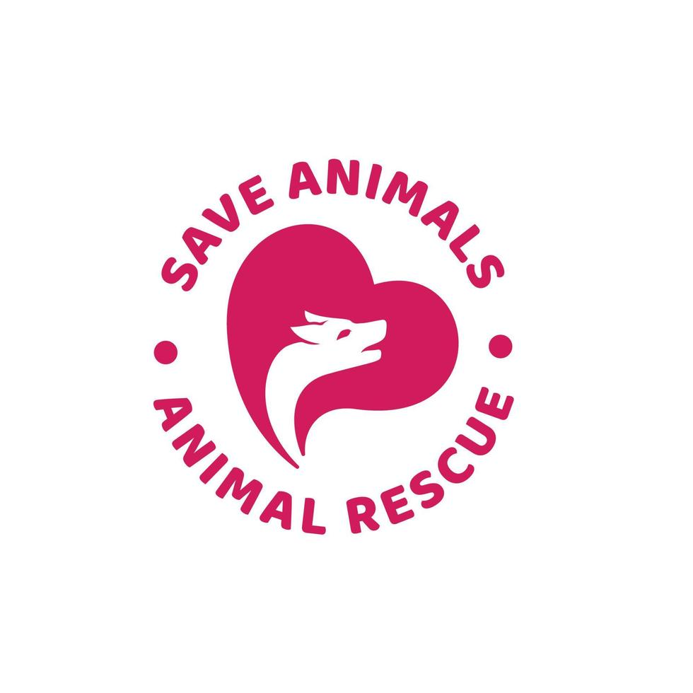

Casos de urgencia alta
Los casos clasificados con urgencia alta requieren atención veterinaria inmediata.

En esta sección se presentan los animales registrados y el estado actual de cada caso.
| Código | Nombre provisional | Categoría | Urgencia | Estado |
|---|---|---|---|---|
| RC-001 | Max | Perro | Alta | En tratamiento |
| RC-002 | Luna | Gato | Media | Bajo observación |
| RC-003 | Sin nombre | Fauna silvestre | Baja | En recuperación |
| RC-004 | Rocky | Perro | Media | Disponible para adopción |
Los casos clasificados con urgencia alta requieren atención veterinaria inmediata.
Los animales en recuperación permanecen bajo observación hasta recibir el alta veterinaria.
Los animales disponibles para adopción pueden iniciar el proceso de asignación de un nuevo hogar.